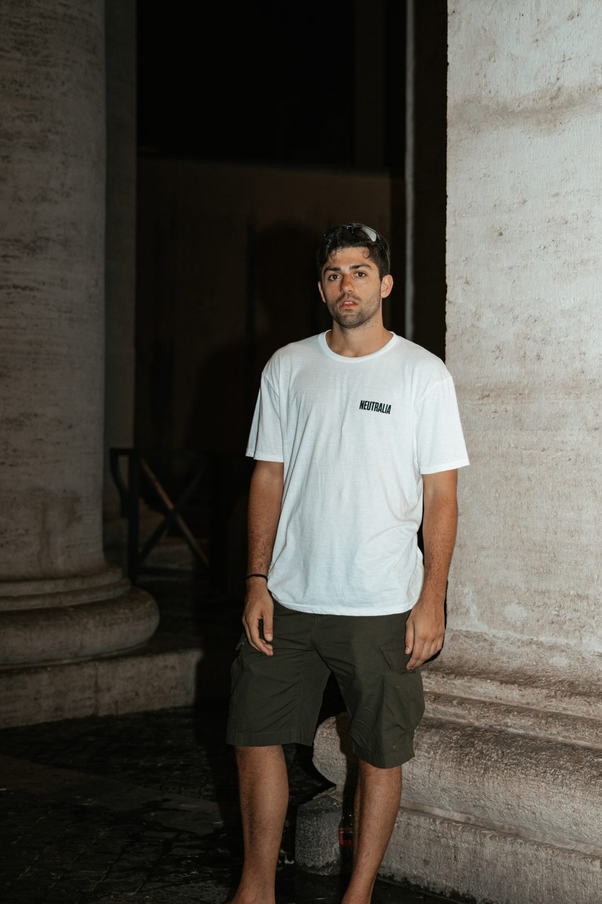

Merchandise ufficiale

Illustrazione di Gabriele Quarta aka Kabo · Foto di Sofia Giacomello
€20 + €6,50 spedizione tracciata
Taglie S · M · L · XL — si scelgono al momento dell'acquisto.
AcquistaCheckout sicuro via Stripe · Spedizione tracciata in Italia
Inserisci l'indirizzo completo di numero civico
Il disegno raffigura un putto, figura cara all'iconografia ottocentesca, che regge la bilancia della giustizia. Ma contro la tradizione i piatti non stanno in equilibrio orizzontale: la bilancia è ruotata in verticale. È la sintesi visiva dell'obiettivo di Neutralia — spostare l'asse della politica da destra e sinistra ad alto e basso.
In alto c'è il teschio: le strutture, le organizzazioni e le élite internazionali che pretendono di decidere su un territorio e sul popolo che lo abita. In basso, la piuma: la libertà, l'unica condizione che permette a un popolo di scegliere il proprio destino.
Più le ali del putto si avvicinano al teschio, più si incancreniscono.
Gabriele Quarta, conosciuto come Kabo, è nato nel 1996 e cresciuto a Monteroni, un piccolo paese nella provincia di Lecce.
Kabo si è laureato in pittura con il massimo dei voti e nel frattempo ha iniziato a lavorare, prima con gallerie d'arte e poi nella street-art, esprimendosi sui muri delle città. È proprio in questa forma d'arte che ha trovato il suo equilibrio, dando vita a uno stile inconfondibile. Nonostante la sua giovane età, ha subito ottenuto riconoscimenti importanti in Italia, vincendo bandi significativi. Ha fondato Putea, un'associazione culturale con sede nel suo studio d'arte e nella sua terra, che è diventata un punto di riferimento nel territorio. Nel 2023 ha introdotto una nuova corrente artistica chiamata Biofilia Urbana, che intreccia l'arte urbana con gli elementi naturali circostanti, fungendo da collante tra natura e arte.